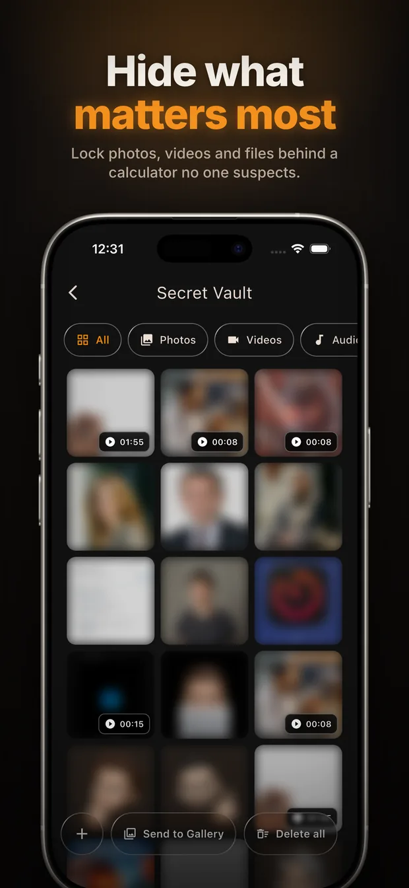
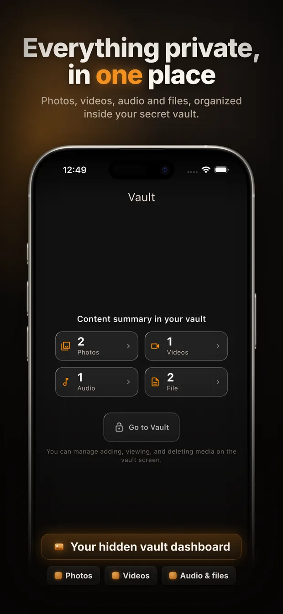
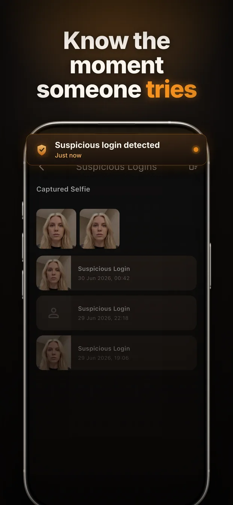
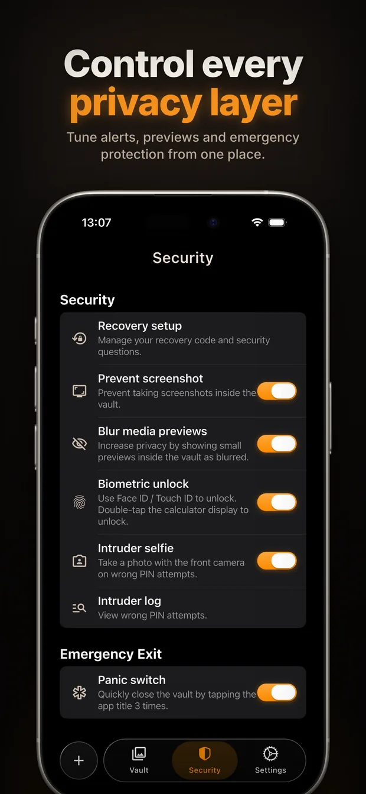

Calculator vault · iOS & Android
Hide your photos behind a calculator that actually works.
On your home screen, Calculator Vault is an ordinary calculator — no lock icon, no reason for anyone to look twice. Type your secret PIN and a private vault opens for your photos, videos and files.
1,000+ downloads on Google Play · Rated 5.0 from 3 ratings on the App Store
- No account
- No cloud upload
- Free to start

How it works
-
1
It looks like a calculator
Because it is one. Open it and you get a fully working calculator — the same thing anyone else sees.
-
2
Type your secret PIN
Enter your code on the keypad and press equals. The vault opens. Face ID, Touch ID and fingerprint work too.
-
3
Your private files, hidden
Import photos and videos from your gallery, shoot new ones inside the app, or store documents. They leave your normal gallery.
What you get
Calculator disguise
No obvious "locked app" icon on your home screen inviting curiosity.
PIN + biometric unlock
Open the vault with your code, Face ID, Touch ID or fingerprint.
Photo & video vault
Import from your gallery or capture directly inside the app.
Hide any file
Documents, screenshots, IDs — all in one private place.
Intruder alerts
A silent front-camera photo after failed unlock attempts, logged for you.
Screenshot protection
Stop your private content from being captured while the vault is open.
Recycle bin
Recover anything you delete by mistake before it's gone for good.
PIN recovery
Get back in with security questions or your recovery code.
Private by design, not by promise
There is no account to create and no server that holds your files. Your photos never leave your phone, so there is nothing for us — or anyone else — to hand over, leak or lose. Your PIN is stored only as a one-way hash, which means even we cannot open your vault.
A look inside




Frequently asked questions
How do I hide photos on my phone so no one can find them?
Install Calculator Vault. On your home screen it is an ordinary calculator, so there is no locked-app icon to attract attention. Enter your secret PIN on the calculator keypad and the hidden vault opens. Move photos into the vault and they are removed from your normal gallery.
What is a calculator vault app?
A calculator vault works as a real calculator but unlocks a private, password-protected storage area when you type a secret code. It hides private photos, videos and files in plain sight, without advertising that anything is hidden at all.
Are my photos uploaded to the cloud?
No. Calculator Vault has no accounts, no sign-up and no servers that can read your content. Everything stays on your own device, and your PIN is kept only as a one-way hash.
What happens if someone tries to guess my PIN?
After failed unlock attempts Calculator Vault silently takes a photo with the front camera and records the attempt in an intruder log, so you can see who tried to get in.
What if I forget my PIN?
You can get back in with your security questions or your recovery code. Because nothing is stored on a server, these are the only ways back in — keep your recovery code somewhere safe.
Is Calculator Vault free?
Yes. The calculator disguise, PIN and biometric unlock, and the photo and video vault are free. Calculator Vault Pro adds unlimited storage, the intruder log with capture photos, screenshot protection and an ad-free experience.
Guides
How to hide photos on iPhone
The built-in Hidden album, where it falls short, and what to use instead.
How to hide photos on Android
Locked Folder, Secure Folder and vault apps — what each actually protects.
What is a calculator vault app?
How the disguise works, what to look for, and its real limits.
Take your privacy back.
Open the calculator, enter your code, and your private world is one tap away.
Available in 60+ languages.